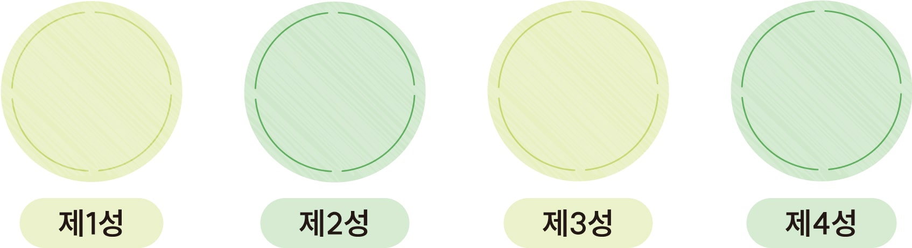
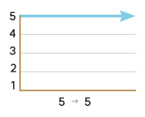
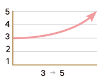
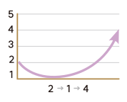
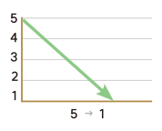

동영상
성조는 음의 높낮이와 그 변화를 말합니다. 중국어에는 기본적으로 네 개의
성조가 있습니다.

ã
á
â
à
설명 1
설명 2
설명 3
설명 4
닫기
설명 1
제1성
높고 평탄한 소리,
부호는 로 표기한다.

설명 2
제2성
중간 음에서 높은음으로
올라가는 소리, 부호는
로 표기한다.

설명 3
제3성
낮은음에서 가장
낮은음으로 내려갔다가
다시 올라가는 소리,
부호는 로 표기한다.

설명 4
제4성
가장 높은음에서 낮은음으로
빠르게 내려가는 소리,
부호는 로 표기한다.
